Double Window Sight Flow Indicators
Fluid transfer & fittings
Sight flow indicators and sight glasses in stainless, mild steel, polypropylene and FEP/PFA lined construction — double window, tubular, rotary wheel, flapper and tri-clamp, 15NB to 400NB.
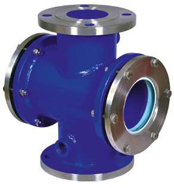

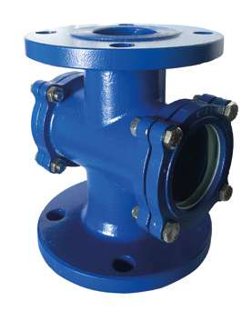
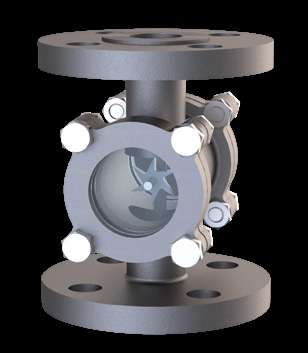
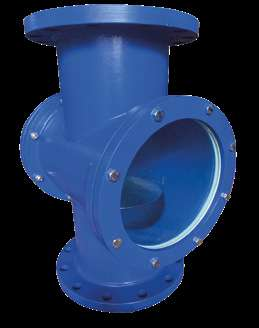
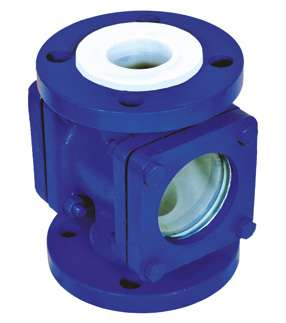
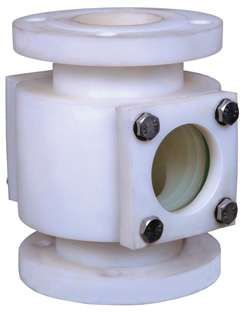


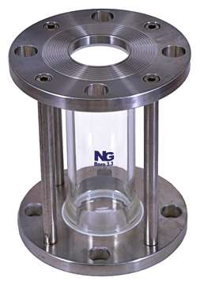

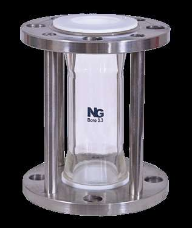


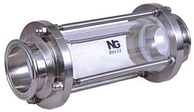
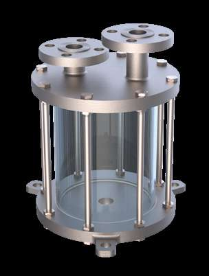
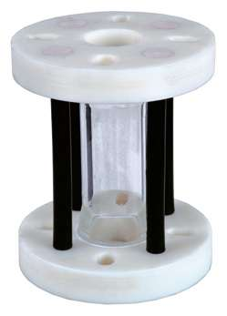
Engineering reference
These tables govern every item in this category. Product pages carry only their own dimensions.
| Size NB | Dimension | ANSI B-16.5 | BS-10 T-'E' | BS-10 T-'F' | PN 10 |
|---|---|---|---|---|---|
| 15 | OD | 90 | 83 | 95 | 95 |
| 15 | PCD | 60 | 67 | 67 | 65 |
| 15 | Hole dia. / no. of holes | 16/4 | 13/4 | 13/4 | 14/4 |
| 20 | OD | 100 | 102 | 102 | 105 |
| 20 | PCD | 70 | 73 | 73 | 75 |
| 20 | Hole dia. / no. of holes | 16/4 | 13/4 | 13/4 | 14/4 |
| 25 | OD | 110 | 114 | 121 | 115 |
| 25 | PCD | 79 | 83 | 87 | 85 |
| 25 | Hole dia. / no. of holes | 16/4 | 13/4 | 16/4 | 14/4 |
| 40 | OD | 125 | 133 | 140 | 150 |
| 40 | PCD | 98 | 98 | 105 | 110 |
| 40 | Hole dia. / no. of holes | 16/4 | 13/4 | 16/4 | 14/4 |
| 50 | OD | 150 | 152 | 165 | 165 |
| 50 | PCD | 121 | 114 | 127 | 125 |
| 50 | Hole dia. / no. of holes | 19/4 | 16/4 | 16/4 | 18/4 |
| 65 | OD | 180 | 165 | 184 | 185 |
| 65 | PCD | 140 | 127 | 146 | 145 |
| 65 | Hole dia. / no. of holes | 19/4 | 16/4 | 16/8 | 18/4 |
| 80 | OD | 190 | 184 | 203 | 200 |
| 80 | PCD | 152 | 146 | 165 | 160 |
| 80 | Hole dia. / no. of holes | 19/4 | 16/4 | 16/8 | 18/4 |
| 100 | OD | 230 | 216 | 229 | 220 |
| 100 | PCD | 190 | 184 | 190 | 180 |
| 100 | Hole dia. / no. of holes | 19/8 | 16/8 | 16/8 | 18/4 |
| 150 | OD | 280 | 279 | 305 | 285 |
| 150 | PCD | 241 | 235 | 260 | 240 |
| 150 | Hole dia. / no. of holes | 22/8 | 19/8 | 19/12 | 22/8 |
| 200 | OD | 345 | 337 | 368 | 340 |
| 200 | PCD | 298 | 292 | 324 | 295 |
| 200 | Hole dia. / no. of holes | 22/8 | 19/8 | 19/12 | 22/8 |
| 250 | OD | 405 | 406 | 432 | 395 |
| 250 | PCD | 362 | 256 | 381 | 350 |
| 250 | Hole dia. / no. of holes | 25/12 | 19/12 | 25/12 | 22/12 |
| 300 | OD | 485 | 457 | 489 | 445 |
| 300 | PCD | 432 | 406 | 438 | 400 |
| 300 | Hole dia. / no. of holes | 25/12 | 22/12 | 25/16 | 22/12 |
| 350 | OD | 535 | 527 | 552 | 505 |
| 350 | PCD | 476 | 470 | 495 | 460 |
| 350 | Hole dia. / no. of holes | 29/12 | 22/12 | 25/16 | 22/16 |
| 400 | OD | 595 | 578 | 610 | 565 |
| 400 | PCD | 540 | 521 | 552 | 515 |
| 400 | Hole dia. / no. of holes | 29/16 | 22/12 | 25/20 | 26/16 |
All dimensions in mm, reproduced as printed in the catalogue. The 250NB BS-10 Table E PCD is printed as 256 — confirm it with us before drilling to that figure.
| Cat. Ref. | Size | L1 | L | E — D | E — P.C.D. | E — Holes | F — D | F — P.C.D. | F — Holes | ASA — D | ASA — P.C.D. | ASA — Holes |
|---|---|---|---|---|---|---|---|---|---|---|---|---|
| LSSG07 | 07 | 152 | 192 | 96 | 67 | 120 X 4 | 96 | 67 | 120 X 4 | 89 | 60 | 120 X 4 |
| LSSG1 | 25 | 152 | 192 | 120 | 82 | 120 X 4 | 120 | 87 | 160 X 4 | 120 | 79 | 160 X 4 |
| LSSG1.5 | 40 | 152 | 192 | 140 | 98 | 120 X 4 | 140 | 105 | 160 X 4 | 140 | 98 | 190 X 4 |
| LSSG2 | 50 | 152 | 192 | 165 | 114 | 160 X 4 | 165 | 127 | 160 X 4 | 165 | 121 | 190 X 4 |
| LSSG3 | 80 | 152 | 192 | 205 | 146 | 160 X 4 | 205 | 165 | 160 X 4 | 205 | 152 | 190 X 4 |
| LSSG4 | 100 | 152 | 192 | 205 | 178 | 160 X 4 | 225 | 190 | 160 X 8 | 225 | 190 | 190 X 8 |
| LSSG6 | 150 | 152 | 192 | 305 | 235 | 190 X 8 | 305 | 260 | 190 X 8 | 305 | 241 | 190 X 8 |
All dimensions in mm, transcribed exactly from the datasheet. The Holes column is printed in the form shown — the leading group is the hole diameter with the diameter symbol set as a zero (so “120 X 4” reads as Ø12 × 4 holes, “190 X 8” as Ø19 × 8 holes). Confirm the drilling against your mating flange before manufacture.
Send your requirement — media, temperature, pressure, dimensions — and we'll recommend the right product or fabricate it.
Talk to an engineer